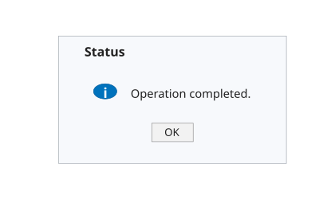

uialert(parent, message, title)
uialert(parent, message, title, Name, Value)
| Paramètre | Description |
|---|---|
| parent | Handle de figure UI parent, generalement cree avec uifigure. |
| message | Texte du message affiche dans la boite d'alerte. Utiliser un vecteur de caracteres, une chaine scalaire ou un tableau de cellules de lignes de texte. |
| title | Titre de la boite de dialogue. |
| Name, Value | Paires optionnelles. L'option 'Icon' selectionne le style d'icone, par exemple 'info', 'warning', 'error' ou 'question'. |
uialert affiche un message d'alerte modal associe a une figure UI.
f = figure('Name', 'Alert preview', 'Position', [100 100 420 260], 'Color', [1 1 1]);
axis([0 1 0 1]); axis off; hold on;
patch([0.06 0.94 0.94 0.06], [0.12 0.12 0.88 0.88], [0.97 0.98 0.99], 'EdgeColor', [0.62 0.65 0.68]);
text(0.16, 0.78, 'Status', 'FontSize', 12, 'FontWeight', 'bold');
t = linspace(0, 2*pi, 50); patch(0.24 + 0.045*cos(t), 0.55 + 0.045*sin(t), [0.00 0.45 0.74], 'EdgeColor', [0.00 0.35 0.60]);
text(0.24, 0.535, 'i', 'HorizontalAlignment', 'center', 'FontSize', 13, 'FontWeight', 'bold', 'Color', [1 1 1]);
text(0.34, 0.54, 'Operation completed.', 'FontSize', 11);
patch([0.42 0.58 0.58 0.42], [0.25 0.25 0.36 0.36], [0.95 0.95 0.95], 'EdgeColor', [0.55 0.55 0.55]);
text(0.50, 0.30, 'OK', 'HorizontalAlignment', 'center', 'FontSize', 10);
f = uifigure('Visible', 'off', 'Name', 'Import');
uialert(f, 'No file was selected.', 'Import', 'Icon', 'warning');
close(f)| Version | Description |
|---|---|
| 2.0.0 | version aide API dialogue mise a jour. |